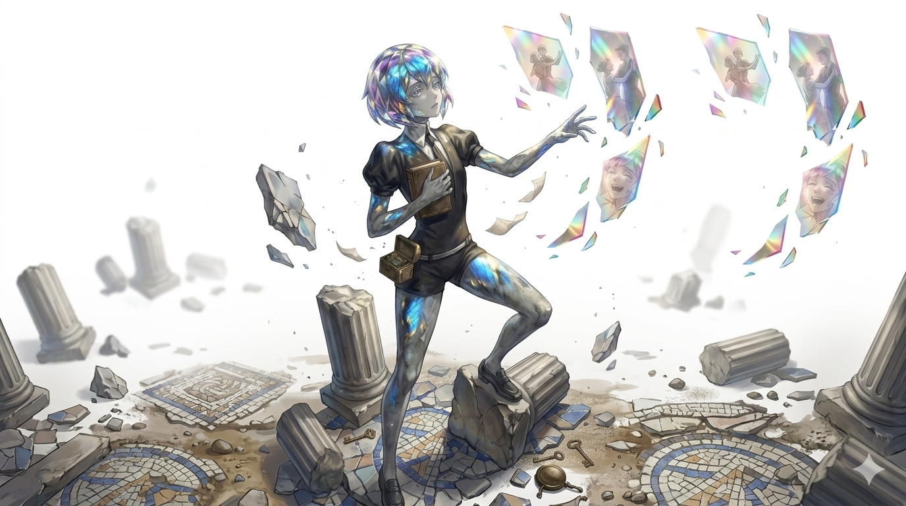

"From afar, just a cloudy grey stone. But when the light hits at the perfect angle..."
Psychological Hook // Hardness 6
Overthinks during critical tactical moments. Easily distracted and emotionally immobilized by beautifully tragic phenomena.
LABRA
Labradorite Component
The Melancholic Observer
Labra fundamentally rejects the monolithic hatred their kin hold for humanity. Driven by an INFP 4w5 cognitive framework, they are deeply individualistic and introspective, viewing the war not as a crusade, but as an existential tragedy.
They distance themselves from aggressive gems, preferring the silence of the ruins. Their empathetic core demands they understand *why* the world is cruel, rather than simply destroying the source of that cruelty. They fight out of poetic necessity, guarding their overwhelming emotions beneath a cloudy, quiet exterior.